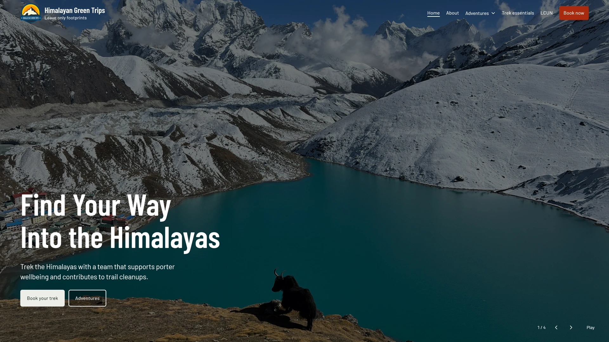
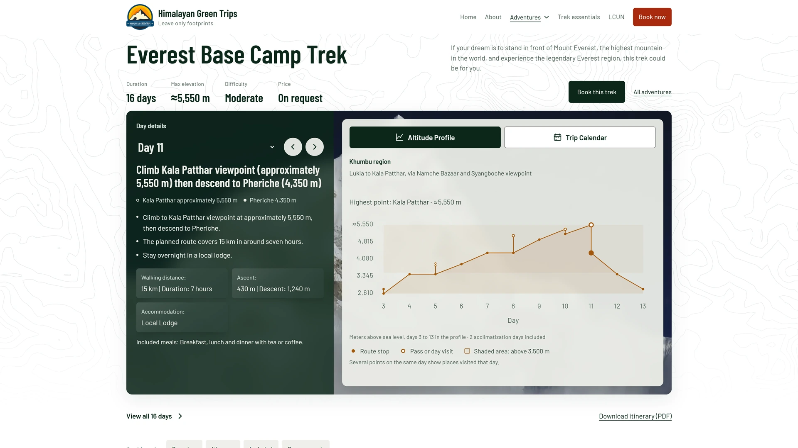
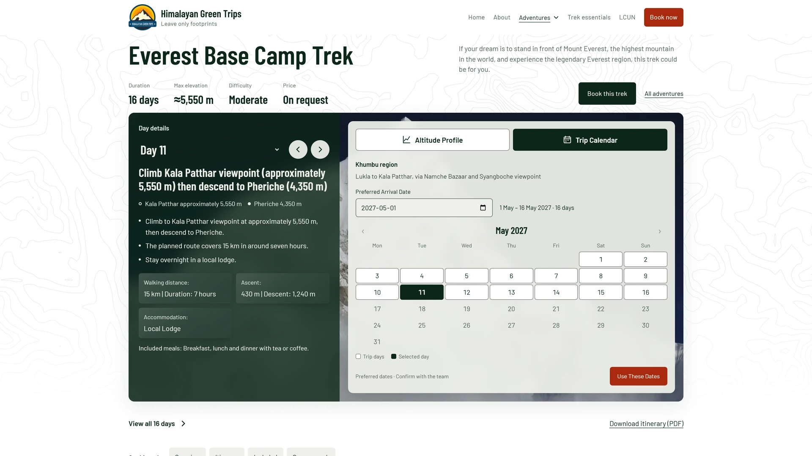
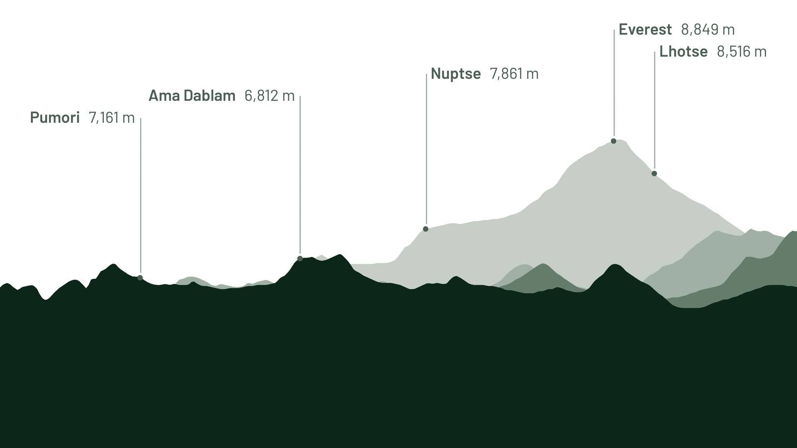
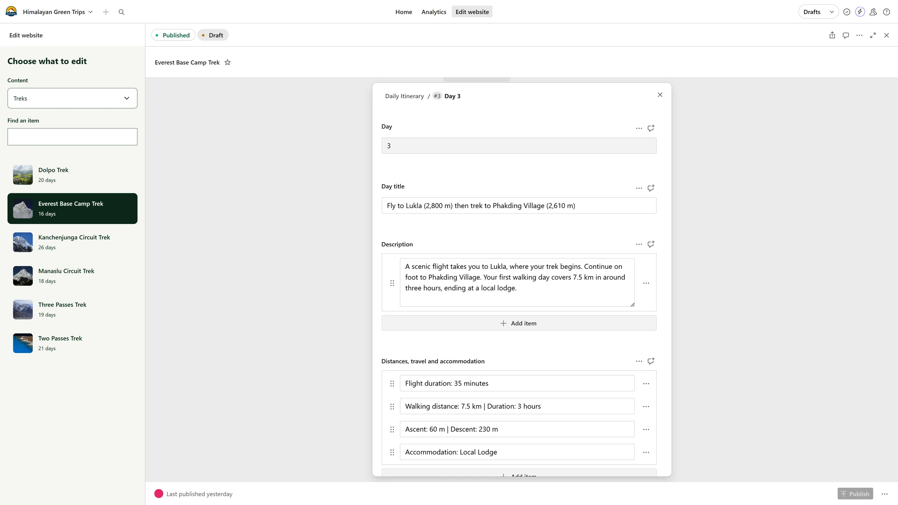
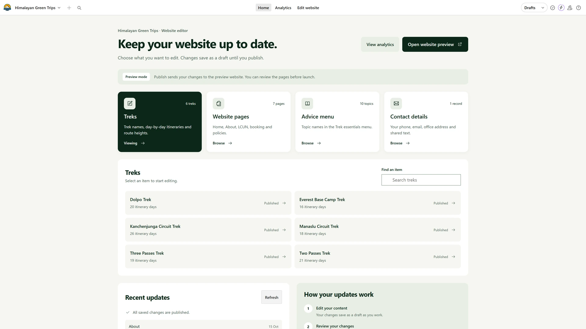
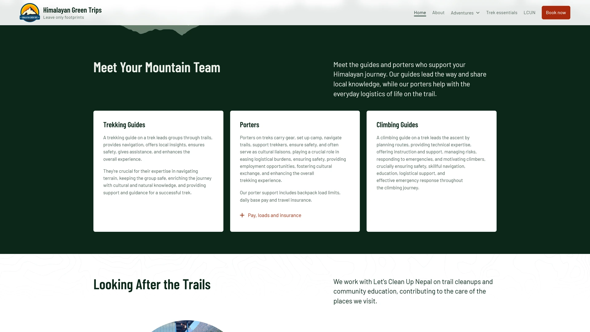

Website strategy, design and development · 2026
Himalayan Green Trips.
Helping travellers understand the trek ahead.
A trekking website shaped by the questions that come up on the trail. I designed and built a connected planning experience, from choosing a route to understanding each day, with a custom content system for the team behind it.
- My role
- Independent Digital Experience Designer
- Scope
- Website strategy, content architecture, UX/UI, visual direction, front-end development and CMS integration

01The starting point
A trekking company whose website had fallen behind.
Himalayan Green Trips is a Kathmandu-based trekking agency led by Raj Shrestha. Its work includes porter support and trail cleanups with Let’s Clean Up Nepal. The website needed to explain that work while helping someone far away judge whether a trek suited them.
The legacy site made that decision harder. In documented checks, trip-level “Book Now” controls opened an unavailable-booking message. The message asked visitors to get in touch but offered no contact action inside the dialog. Trip cards also used details such as “Variable Rate(s)” and “Duration Varies,” leaving little to compare.
I rebuilt the experience around the information a traveller needs before making an enquiry, with a content structure the agency could maintain after handover.
02Questions from the trail
“How much climbing is there tomorrow?”
On the trail in Nepal, conversations over dal bhat kept returning to distance and elevation. How far had we walked? How much climbing was left? I asked my guide about the next day often enough to recognise how much that answer shaped my preparation.
Those everyday conversations gave the project its starting point. A place name and a day number could describe an itinerary, but they did not tell me what the day might demand. I wanted the website to bring the practical details together, where someone could find them without continually moving between a chart and a long written itinerary.
This was an observation from trekking experience, rather than a formal user study. It informed the design questions I explored with the agency.
03The planning experience
Keep the day and its context together.
The trek page connects a selected day to its place on the altitude profile. Distance and walking time sit beside ascent, descent and accommodation. A traveller can move through the days with previous and next controls or choose one directly. The full itinerary remains available for people who prefer to read it in sequence.
The profile shows the route’s stop elevations, including day visits and acclimatisation stops. Several points can belong to the same day. That matters because the highest place visited is not always where someone sleeps.

See the same trip as dates
A second view turns the itinerary into a trip calendar. Choosing a preferred arrival date places the days against actual dates. The interface labels these as preferred dates to confirm with the team; selecting them does not imply a confirmed booking.

The wider planning flow includes a booking questionnaire and trek-specific packing tools. The itinerary can also be taken away as a PDF, with a QR code providing a route back to the website. These details support the preparation that continues after someone closes the page.
Explore the live itinerary (opens in a new tab)04The visual direction
Drawing a landscape with a connection to the place.
I kept the mountain imagery and green identity, with light backgrounds giving the trip information room to be read. The landscape illustration became another way to make the site specific to the Khumbu region.
The skyline uses four west–east transects through NASA SRTM 30 m elevation data, sampled through OpenTopodata. Published peak elevations supply the labelled heights. The site carries those credits alongside the illustration.

The skyline and the itinerary profile serve different purposes. The skyline gives the website a sense of place; the profile helps someone understand the sequence of a trek using its itinerary elevations. Keeping their sources distinct avoids suggesting that a decorative mountain silhouette is a navigation tool.
05The editing system
Let the team update the trip once.
A useful itinerary is also a maintenance problem. If the route changes, the written days, profile and downloadable information need to stay in step. Requiring the agency to edit each version separately would make that work easy to postpone and easy to get wrong.
I built a custom Sanity editor around the day-by-day itinerary. Each day has fields for distance and duration, ascent and descent, accommodation and meals. That structured content feeds the traveller-facing views and the downloadable itinerary.

See the editor’s home screen

- Editorial input
- Day-by-day trip details in a custom Sanity editor.
- Website views
- The written itinerary, altitude profile and trip calendar draw on the trip content.
- Take-away information
- PDF itineraries and QR codes extend the planning beyond the website.
- Ongoing review
- Cloudflare analytics in the editor give the team a place to review site activity.
The aim was to make keeping a trip current part of the agency’s normal work, with less dependence on a developer for routine content changes.
06The people behind the trek
Make the commitments easy to find.
Porter welfare and the relationship with Let’s Clean Up Nepal belong in the trip-planning experience. I brought those details closer to the information a traveller is already reviewing, while giving the guides and porters space to be introduced in their own roles.
The site explains the agency’s approach through practical details, including porter load limits, base pay and insurance. On the Everest Base Camp page, the included-services list states a maximum load of 20 kg per porter. Cleanup guidance also appears alongside the trek information.
Presenting the agency’s stated commitments this way gives travellers something specific to read and ask about. It also keeps responsibility connected to how a trip is organised.

07What shipped
A live website built around preparing for the trek.
The completed site brings route selection and day-by-day planning into one experience. Travellers can inspect a trek’s profile, see its days on a calendar and begin an enquiry with more context. The agency has an editing system for maintaining the information behind those views.
I led the website strategy, content architecture, UX/UI design and visual direction, and built the front end and CMS integration with assistance from Claude Code and Codex. The design decisions and final review remained mine.
The work now provides a basis for evaluating how people use the itinerary and where they hesitate before an enquiry. No conversion improvement is claimed here; the outcome reported is the working website and the connected content system.
About this case study
Updated October 2026. Legacy-site observations come from documented checks on 14 October; the current itinerary and calendar were reviewed on 19 October. AI use and attribution.